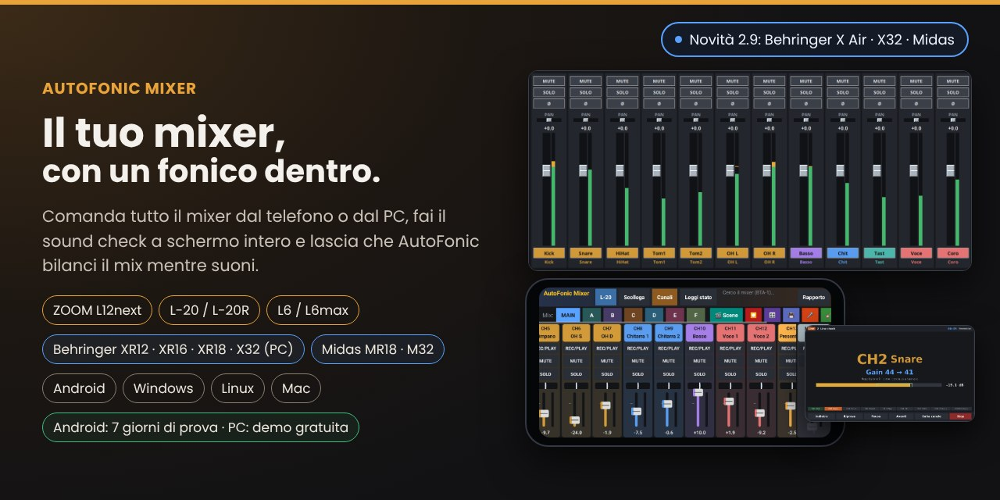
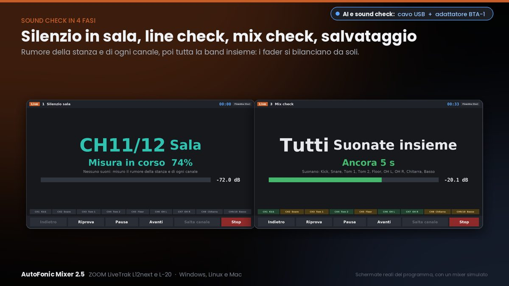
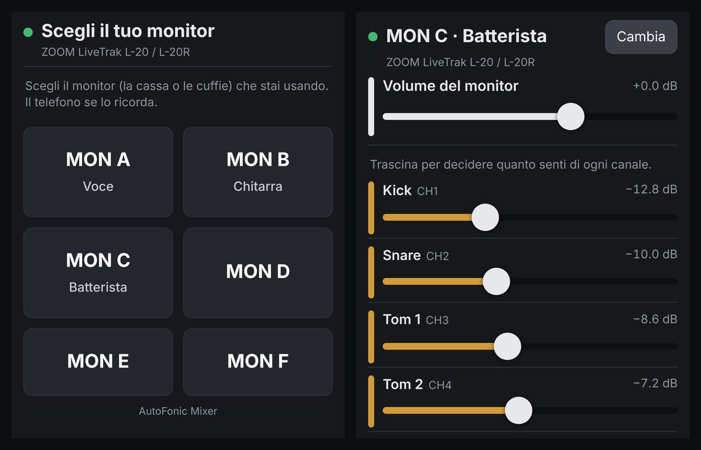

AUTOFONIC MIXER
L'app per ZOOM LiveTrak su Android e PC
Comanda il tuo ZOOM LiveTrak L-20, L-20R, L12next, L6 e L6max dal telefono Android o da un computer Windows, Linux o Mac. Le app di ZOOM esistono solo per iPhone e iPad: AutoFonic Mixer è l'app per L-20 / L-20R su Android e il telecomando LiveTrak per il PC.
🆕 NOVITÀ
- 2.9.2 · 20 nov 2026 — 📱 Monitor dal telefono: ogni musicista regola il suo monitor dal browser del telefono o del tablet (anche iPhone e iPad) · 🎚 Soundcheck virtuale per L-20 / L-20R · 🎨 strumenti di serie per Behringer e L6
- 2.9.1 · 19 nov 2026 — 🔓 il programma per PC si sblocca da solo dopo il pagamento con la carta · 💾 L-20: tempo di registrazione che resta sulla SD · 🎬 tasti delle scene col solo numero
- 2.9 · 18 nov 2026 — 🎛️ mixer Behringer e Midas sul PC (X Air XR12 · XR16 · XR18, X32, Midas MR18 · M32) · 💳 versione completa a 9,99 €, codice subito dopo il pagamento · 🪕 strumenti ukulele
- 2.8.28 · 18 nov 2026 — 🎛️ L-20: EQ grafico del master, effetti 1 e 2, REC/PLAY del master
- 2.8.27 · 17 nov 2026 — 🔴🟢 L-20: un tasto REC/PLAY su ogni striscia

Mixer supportati
L12nextL-20L-20RL6L6maxBehringer XR12XR16XR18X32Midas MR18M32
| Mixer | Collegamento | Telefono e PC |
|---|---|---|
| ZOOM LiveTrak L12next | USB + Bluetooth ZOOM BTA-1 | ✅ tutti i comandi, sound check e mix automatico sul PC |
| ZOOM LiveTrak L-20 / L-20R | USB + Bluetooth ZOOM BTA-1 | ✅ tutti i comandi, provati su mixer veri |
| ZOOM LiveTrak L6 / L6max | USB-C, oppure senza fili con un CME WIDI Jack | ✅ funziona |
| Behringer X Air XR18 · Midas MR18 | rete: Wi-Fi o cavo Ethernet | ✅ PC: comandi, sound check e mix automatico |
| Behringer X Air XR12 · XR16 · Midas MR12 | rete: Wi-Fi o cavo Ethernet | ✅ PC: comandi e controllo dei livelli |
| Behringer X32 · Midas M32 | rete: cavo Ethernet | ✅ PC: 32 canali, sound check e mix automatico con la scheda X-USB |
Cosa puoi fare

Tutti i fader in mano. Fader, pan, mute, solo, meter e LED SIG di ogni canale, canali stereo e ritorni effetti. Perfetto per l'L-20R, che non ha fader.

Ogni regolazione del canale. EQ a 3 bande con frequenza dei medi, low cut, fase, EQ OFF, mandate EFX 1 e 2, mix monitor A–F per ogni musicista.

Anche sul PC. Windows, Linux e Mac, con scene, registratore SD (REC/PLAY per canale, play, stop, tempo) e lettura di tutto lo stato del mixer.

Un fonico dentro. Sul PC, sound check a tutto schermo leggibile da dietro la batteria, e un assistente che ascolta ogni canale via USB e bilancia il mix mentre suoni.
🆕 NOVITÀ DELLA 2.9.2 · SUL PC
Monitor dal telefono: ogni musicista regola il suo monitor

AutoFonic Mixer sul PC tiene il mixer; i musicisti inquadrano un QR e si apre una pagina nel browser: iPhone, iPad e Android, senza installare niente.
- Ognuno sceglie il suo monitor (dagli un nome sul PC, es. C · Batterista) e muove solo il suo mix: quanto sente di ogni canale, più il volume del monitor.
- Più telefoni insieme; quello che cambia il fonico si vede da solo sui telefoni.
- Sicuro: codice di 4 cifre, solo le mandate ai monitor (mai il mix di sala, i mute o le scene), solo dalla rete locale.
- ZOOM L12next, L-20 / L-20R, L6 e Behringer X Air / X32. Libero nei 14 giorni della demo per PC.
PC e telefoni sulla stessa Wi-Fi, internet non serve: un router Wi-Fi qualsiasi sul palco (il modo più sicuro), il Wi-Fi del locale (non la rete "ospiti"), o l'hotspot di un telefono o del PC. Se a casa funziona e al locale no, imposta quella Wi-Fi come rete privata in Windows.
🆕 NOVITÀ DELLA 2.9.2 · ZOOM L-20 / L-20R
Soundcheck virtuale: il soundcheck senza la band
Registri la band una volta sulla scheda SD del mixer, poi rimandi le tracce nei loro canali e sistemi il mix con calma: EQ, fader, mix dei monitor, anche il sound check con l'AI. Il giorno prima del concerto, o con il locale ancora vuoto.
- Un pulsante per tutto: AutoFonic Mixer prepara i canali, registra, torna all'inizio e fa ripartire, in loop: quando la registrazione finisce riparte da capo.
- Le tracce registrate di CH1–16 tornano nei loro canali, proprio come con i tasti REC/PLAY del mixer.
- "Torna al live" rimette ogni canale com'era, anche se chiudi il programma, cade il Bluetooth o finisce la demo.
- PC e Android, anche nella demo gratuita.
Solo per ZOOM LiveTrak L-20 e L-20R: gli unici LiveTrak in cui un'app può mettere in PLAY le tracce una per una. Prima versione: i vostri rapporti dai concerti veri sono benvenuti.
Domande frequenti
Esiste un'app per ZOOM L-20 / L-20R su Android?
Sì: AutoFonic Mixer, su Google Play. L'app L-20 Control di ZOOM esiste solo per iOS. Si collega con l'adattatore Bluetooth ZOOM BTA-1, come l'app ZOOM.
Posso comandare un ZOOM LiveTrak L-20R senza iPad?
Sì, dal telefono Android o da un computer Windows, Linux o Mac.
C'è un'app per ZOOM L12next su Android o Windows?
Sì, su Android e sul PC, dove fa anche il sound check e il mix automatico. Il vecchio L-12 non è supportato.
C'è un'app per iPhone / iPad?
Non ancora. Ma con i monitor dal telefono ogni musicista regola il suo monitor dal browser di un iPhone o di un iPad, con AutoFonic Mixer sul PC che tiene il mixer.
Funziona con ZOOM L6 / L6max?
Sì, con il cavo USB-C, oppure senza fili con un CME WIDI Jack.
Funziona con Behringer XR18, XR12, XR16 o X32 / Midas M32?
Sì, sul PC (Windows, Linux, Mac) in rete: fader, mute, EQ, compressore, gate, mandate, mute group, scene. Con XR18 / MR18 e X32 anche il sound check e il mix automatico.
È gratis?
Android: 7 giorni di prova gratis, poi un solo acquisto. PC: demo gratuita di 14 giorni, poi la versione completa a 9,99 €, una volta sola: paghi con la carta e ricevi subito il codice di sblocco.
🔑 Versione completa per PC: 9,99 €, una volta sola
⚡ Paghi con la carta e ricevi subito il codice di sblocco, sullo schermo e per email.
Vale per sempre sul tuo PC. In AutoFonic Mixer premi 🔑 Sblocca per vedere il codice del tuo PC, poi scegli come pagare:
Carta (Stripe): scrivi il codice del PC mentre paghi, il codice di sblocco compare subito dopo il pagamento e arriva anche per email. PayPal: poi scrivi a autofonic.mixer@gmail.com il codice del tuo PC e ricevi il codice di sblocco per email.
Ti piace questo progetto? Sostienilo con una donazione: anche un piccolo contributo aiuta AutoFonic Mixer a crescere.
Dona con PayPalProgetto indipendente di Francesco Rizzo, non affiliato a ZOOM Corporation né a Music Tribe. ZOOM e LiveTrak sono marchi di ZOOM Corporation; Behringer, X Air, X32 e Midas sono marchi di Music Tribe. Contatti: autofonic.mixer@gmail.com · GitHub · Privacy